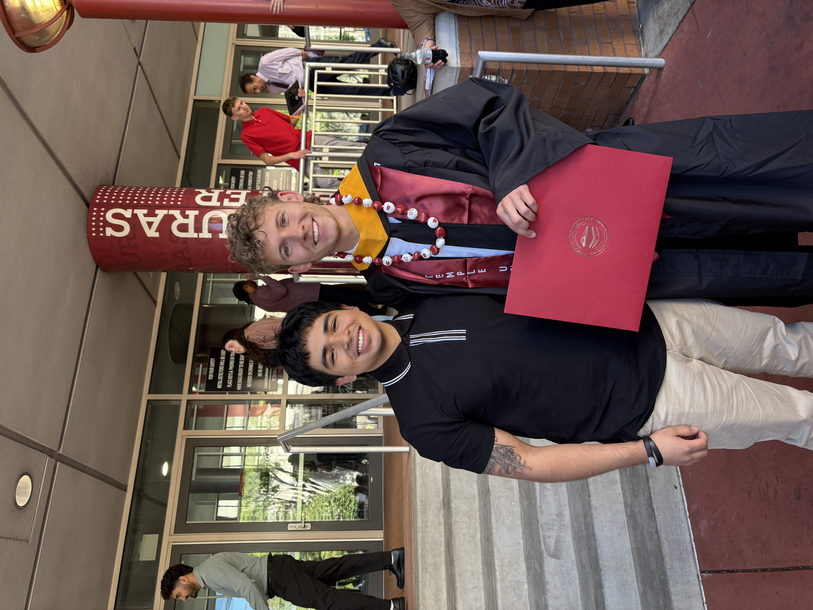

Temple ACM
Vice President of Temple ACM, organizing technical workshops, employer talks, and community events for the largest CS student organization at Temple.
Community

Vice President of Temple ACM, organizing technical workshops, employer talks, and community events for the largest CS student organization at Temple.
Logistics Team Lead for Temple's 36-hour hackathon, coordinating operations, vendors, sponsorship resources, and student experience.
Podcast host and editor for Owl Byte, Temple CIS's podcast for sharing student, faculty, industry, and research stories with the computing community.